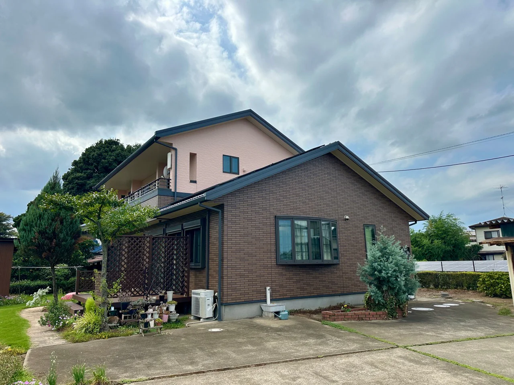
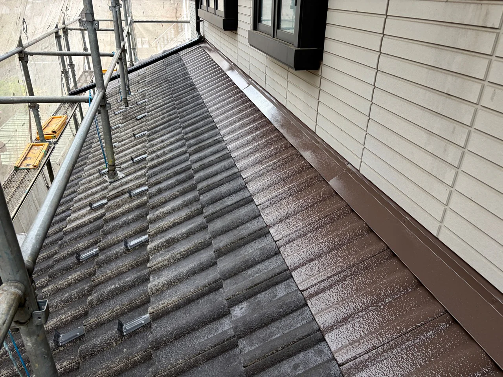
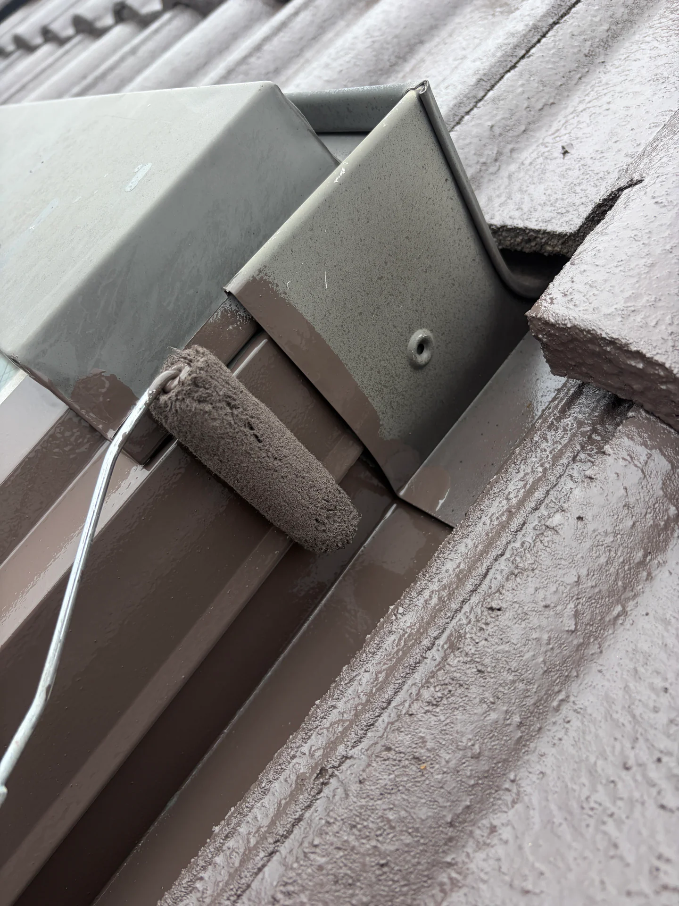

施工事例
使用塗料・費用・工期まで、公開しています。
「一式」ではなく、どこに何を使い、いくらかかり、何日かかったのか。判断の材料になるように、実際の数字をそのまま載せています。

桶川市坂田 ／ 築12年 ／ 2025年10〜11月
艶を落として、真っ黒に仕上げる
外壁・屋根・付帯部・ベランダ防水／110〜130万円／約20日
「真っ黒な家にしたい」というご要望から。艶を抑えたマットな質感で、屋根には遮熱塗料を採用。隣家との間が狭い立地でした。
この事例を詳しく見る →
桶川市鴨川 ／ 築16年 ／ 2025年4〜5月
色を変えて、印象を一新する
外壁・付帯部／120〜150万円／約1ヶ月
北面の黒い雨だれと目地の硬化が進んでいたお宅。屋根は瓦のため塗装せず、外壁をライトブルーグレーとホワイトに塗り分けました。
この事例を詳しく見る →
桶川市川田谷 ／ 築15年 ／ 2025年7〜8月
レンガの柄を消さずに、色あせだけを回復する
外壁・付帯部／130〜150万円／約1ヶ月
上壁は塗り替え、下壁のレンガ調はクリヤー（透明）塗装。柄をそのまま残しながら、色の深みと艶を取り戻しました。
この事例を詳しく見る →施工工程写真
完成後だけでなく、途中の工程も掲載しています。
高圧洗浄、下塗り、中塗り、コーキング、防水まで、仕上がりを支える実際の現場写真です。




